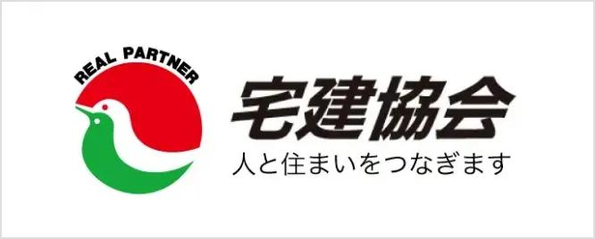
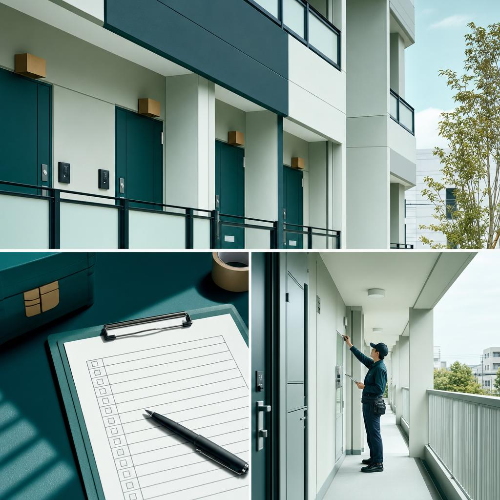

一つの物件に集中する
件数を追うのではなく、その物件の価値を上げる条件や売却以外の可能性まで検討します。
Know the value before you decide
調査と専門家連携で、売却・購入・管理の選択肢を広げます。急いで価格を下げる前に、まだ見えていない可能性から整理します。
とくに売却は、必要に迫られてからでは選択肢が狭まりやすいもの。KAGOYAは物件の状態、法的条件、市場性を整理し、「いま売る」以外も含めて判断材料をつくります。
相場だけで決めない。調査、連携、説明という三つの層を重ね、物件ごとに違う「最善」を探します。
件数を追うのではなく、その物件の価値を上げる条件や売却以外の可能性まで検討します。
弁護士、税理士、司法書士など、課題に応じた専門家とつながり、判断の抜けを減らします。
価格、期間、制度上の制約など、不都合な情報も隠さず、納得できる選択を支えます。
売買の仲介だけではありません。管理、投資、相続、資金計画、建築・リノベーションまで、物件と目的に合わせて組み立てます。
売却不動産／購入不動産／一棟収益不動産の相談
賃貸管理／空室対策／収益性の整理／運用改善
相続／空き家／再建築不可など複雑な条件の整理
FP相談／投資用不動産／建築・リフォーム・リノベーション
公式ブログで紹介されている、再建築不可物件の事例。評価の前提を調べ直し、売却までの道筋を再構成しました。
再建築不可という一つの条件だけで結論を出さず、接道・法令・手続きなどを整理した実例です。詳しい経緯は公式ブログ掲載内容をもとにしています。
※同様の結果を保証するものではありません。物件ごとに条件は異なります。居住用、一棟収益、管理物件。情報は変動するため、最新状況はお問い合わせ時にご確認ください。


不動産の相談は、途中が見えないと不安になります。調査から実行まで、判断材料と次の一手を共有します。
売却時期、資産背景、困っていることを整理します。
現地、市場、法令、権利関係など必要な項目を確認します。
売却、保有、管理、改修などを費用・期間とともに比較します。
選んだ方針に沿って、専門家とも連携し実行します。
不動産は、家族、仕事、相続、将来設計とつながっています。だからKAGOYAは、物件だけを見て結論を出しません。
※人物写真は相談シーンのイメージです。代表者本人の写真ではありません。
会社情報を見るContact